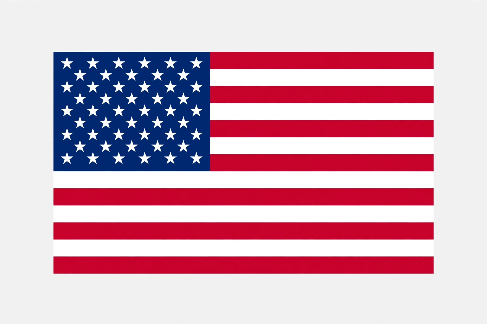

United States
From Wikipedia, the free encyclopedia

The United States of America (USA or U.S.), commonly known as the United States or America, is a country primarily located in North America. It is a federal republic of 50 states and a federal district (Washington, D.C.). The third-largest country by area and population (about 340 million), it has the world's largest economy by nominal GDP and its military is the world's most powerful. The U.S. declared independence from Great Britain in 1776.
Geography
The contiguous states span from the Atlantic to the Pacific; Alaska and Hawaii are the two non-contiguous states, and there are territories including Puerto Rico and Guam. Landscapes range from Arctic Alaska to tropical Hawaii and Florida, with the Mississippi River system and Great Lakes among major features.
Government and history
The Constitution of 1788 established a federal presidential republic with three branches. Key events include westward expansion, the Civil War (1861–65) which ended slavery, industrialisation, leadership in both world wars, the Cold War against the Soviet Union, and emergence as the world's leading superpower.